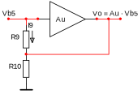
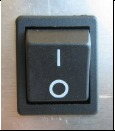
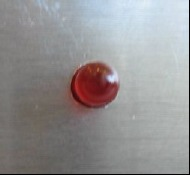
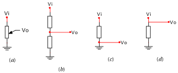
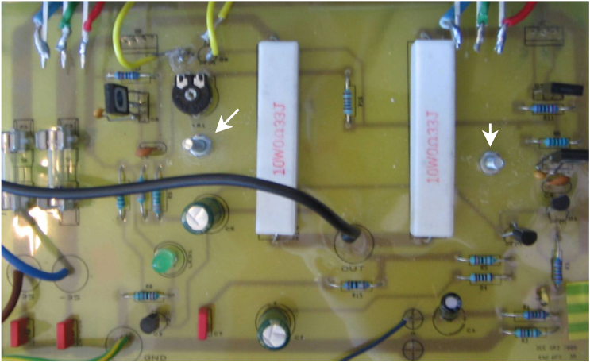
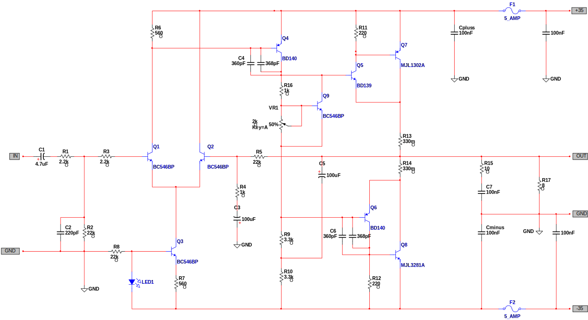
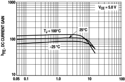
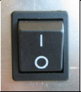
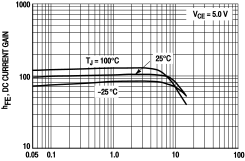

Rapport for konstruksjon av den 60 W klasse AB-forsterkeren Project 3A.
Rapport for konstruksjon av den 60 W klasse AB-forsterkeren Project 3A: enkelt design og god lydkvalitet. PDF-utgave.
Stian Rishaug, Bastian S. Solem, Aleksander Uthus og Vegard Øye.
Veileder: Herman Ranes.
Sammendrag
Simulering ga jevn forsterkning i det hørbare området (20 Hz–20 kHz). Målt forsterkning var 24,9 dB, med en effekt på 2 × 55 W ved 8 Ω.
En detaljert kretsanalyse av forsterkeren trinn for trinn ga en forsterkning uten tilbakekobling på 20714 ganger; beregnet forsterkning med tilbakekobling var 23 dB.
Strømforsyningen var en 200 VA 24–0–24 V transformator; fortrinnsvis bør en på 300 VA brukes.
Kabinettet og innsiden er dokumentert med fotografier. Forsterkeren har to forsterkerkretser, en for hver lydkanal, med felles kjøleribbe. Kretskortenes «silk screen» har enkelte feil.
Grunnet støyproblemer er kretsen lettere modifisert ved å lodde fast ekstra kondensatorer. Kjølingen bruker termisk tilbakekobling. Hvilestrømmen bestemmes ved å skru på et potensiometer og bør ligge på ca. 75 mA.
Budsjettet lå på 1000,– kr, mens utgiftene ble 1085,70 kr, bl.a. på grunn av dyre utgangstransistorer. Testing ble gjort med billige BD911- og BD912-transistorer; lydkvaliteten økte dramatisk da de ble byttet ut med MJL3281A- og MJL1302A-transistorer.
Forsterkeren kan anses som høyst vellykket lydmessig, men det er rom for forbedringer: automatisk utlading av glattefilteret, DC-vern over utgangstrinnet for å beskytte høyttalerne ved kortslutning av utgangene, kraftigere strømforsyning, større kjøleribbe, mindre kretskort og ev. delefilter.
Forsterkertype og spesifikasjoner
Mens det er trivielt å forsterke en konstant inngangsstrøm eller -spenning, er det vanskelig å gjengi endringer i den samme strømmen eller spenningen. Både blant hobbyentusiaster og profesjonelle går det sport i å konstruere en «enda bedre» forsterker, og hi-fi-pressen ser aldri ut til å gå tom for anledninger til å presentere det nyeste, mest avanserte og angivelig beste innen elektronisk lydgjengivelse. Hvor mye av utviklingen som er reell, er det opp til den enkelte å vurdere, men et kjapt overblikk over markedet levner ingen tvil om at lydforsterkning er big business.
Mot denne bakgrunnen presenterer vi et forsterkerdesign som er 20 år gammelt og forbausende enkelt. Rod Elliotts Project 3A (fork. P3A) gir høy ytelse ved lave kostnader, er velutprøvd og er lett å bygge. Det er et ideelt design for nybegynneren, men kan også anbefales til den kresne hi-fi-entusiasten. Designet bygger videre på det opprinnelige Project 03, og drar nytte av nyere og bedre utgangstransistorer.
De oppgitte spesifikasjonene til forsterkeren er som følger:
Forsterkeren er en klasse AB-forsterker, altså en blanding av en klasse A-forsterker og en klasse B-forsterker. For små signaler fungerer den som en klasse A-forsterker, og utgangstransistorene er konstant «på» – men siden dette bare gjelder små signaler, trekker ikke forsterkeren like mye strøm som en ekte klasse A-forsterker, som er konstant «på» uavhengig av lydnivået. For store signaler fungerer forsterkeren som en klasse B-forsterker, og utgangstransistorene bytter på å forsterke positive deler av signalet og negative. Forsterkeren bruker negativ tilbakekobling for å oppnå linearitet for høye strømmer og spenninger. (For en detaljert gjennomgang av kretsens oppbygning og virkemåte, se kretsanalysen.)
Simulering
Bode-diagrammet viser at forsterkeres maksimale båndbredde ligger fra 1/2 Hz til ca. 500 kHz. Den originale kretsen ville normalt gått mye høyere, men siden vi har modifisert kretsen noe ved å koble 368 pF kondensatorer i parallell med \(C_4\) og \(C_6\) (se modifikasjonene for detaljer), blir de flaskehalsen i kretsen.
Det lydmessig interessante området ligger fra 20 Hz til 20 kHz (hi-fi), og av utsnittet ser vi at dette området ligger ganske flatt.
Målinger
Forsterkning
Vi fikk at 8 mV inn ga 140 mV ut. Det gir en forsterking på
Utgangsimpedansen finnes ved å sammenligne utgangsspenningen med last med utgangsspenningen uten last. Vi har følgende målinger for 40 mV inn på inngangen:
Frekvens
Uten last
Ved 1 Ω
Tap
40 Hz
\(v_o = 833,40\) mV
\(v_{oL} = 830,50\) mV
\(\Delta v_o = 2,9\) mV
1 kHz
\(v_o = 834,78\) mV
\(v_{oL} = 832,08\) mV
\(\Delta v_o = 2,7\) mV
16 kHz
\(v_o = 833,90\) mV
\(v_{oL} = 831,90\) mV
\(\Delta v_o = 2,0\) mV
Gjennomsnittlig verdi for utgangsspenning uten last blir \(v_o = 834,03\) mV, for utgangsspenning med last \(v_{oL} = 831,49\) mV og for tap \(\Delta v_o = 2,5\) mV.
For å finne utgangsimpedansen, la oss betrakte en skjematisk fremstilling av forsterkeren uten last:
Ettersom det ikke går noen strøm i forsterkeren, er spenningsfallet over utgangsimpedansen, \(R_o\), lik null, og vi har \(v_o = Av_i\). Med last:
Her har vi følgende spenningsdeling over \(R_o\) og \(R_L\):
I et lydsignal er det ved siden av grunntonen også til stede flere overharmoniske toner. Disse overharmoniske tonene er toner med frekvenser som er \(N\) ganger høyere enn grunntonens frekvens. Det er denne sammensetningen av de overharmoniske tonene sammen med grunntonen som bestemmer klangen til en tone.
Når vi skal forsterke et signal, er vi kun interessert i å forsterke grunnfrekvensen, og unngå å få med andre overtoner enn de som allerede er i signalet. Får vi med flere overharmoniske toner, har vi fått det som kalles klirr. Får man med veldig mange overtoner, blir klirrfaktoren stor og signalet blir deformert gjennom forsterkeren.
En måte klirr ofte oppstår på er hvis en eller flere transistorer jobber på feil arbeidspunkt. Det vil da oppstå klirr på signalet. Klirr måles ved hjelp av et klirrmeter som registrerer de overharmoniske komponentene til et sinussignal og returnerer en prosentverdi.
Utgangseffekten målt med effektmeter var 2 × 55 W ved 8 Ω.
En dobling av effekten vil ikke gi mer enn 3 dB økning i lyden. For eksempel vil en høyttaler med sensitivitet lik driftseffekten 96 dB ved 1 m 1 W gi:
Kretsskjema fra Multisim. For det opprinnelige kretsskjemaet til Rod Elliott, se kretsanalysen. For et modifisert skjema som viser hvordan kretsen ble etter egne justeringer, se modifikasjonene.
Kretsanalyse
Grunnleggende begreper
Den følgende kretsanalysen forutsetter en viss kjennskap til elektroniske kretser og modellering av disse. For å gjøre den mer tilgjengelig, men også for presisjonens skyld, gjennomgår vi her noen av de grunnleggende begrepene som analysen baserer seg på.
Denne seksjonen kan skumleses eller hoppes over av dem som allerede er kjent med elementær elektronisk kretsteori.
Forspenning av transistorer i det aktive området
En transistor har tre utganger eller terminaler – base (B), emitter (E) og kollektor (C) – og dermed også tre overganger – base–emitter-, base–kollektor- og kollektor–emitter-overgangen. Transistorens «oppførsel» eller modus avhenger av hvilke spenninger man påtrykker disse overgangene, dvs. av hvordan man forspenner transistoren. Den modusen man typisk er interessert i hva forsterkere angår, kalles det aktive området, og er kjennetegnet ved at små endringer i base–emitter-spenningen (\(v_{BE}\)) gir store endringer i kollektorstrømmen (\(i_C\)). Kollektorstrømmen er relatert til den mye mindre basestrømmen (\(i_B\)) ved \(i_C = \beta i_B\), der \(\beta\) er transistorens strømforsterkning.
Såkalte BJT-transistorer (bipolare transistorer) kommer i to varianter: NPN-transistorer og PNP-transistorer. I en NPN-transistor går strømmen inn i basen og kollektoren og kommer ut av emitteren. I en PNP-transistor går strømmen inn i emitteren og kommer ut av basen og kollektoren. (For begge transistorer er emitterstrømmen lik summen av base- og kollektorstrømmen, dvs. \(i_E = i_B + i_C\).) Transistorene symboliseres med en pil på emitterutgangen som indikerer strømretningen og dermed også transistortypen.
NPN- og PNP-transistorer i det aktive området.
For å forspenne en NPN-transistor i det aktive området må base–emitter-spenningen være rundt 0,7 V, dvs. basespenningen må ligge ca. 0,7 V over emitterspenningen (eller under for en PNP-transistor).[2] Dessuten må kollektorspenningen ikke ligge mer enn ca. 0,4 V under basespenningen (eller over for en PNP-transistor); vanligvis ligger kollektorspenningen godt over (eller under) basespenningen, som på figuren.
Arbeidspunkt og småsignal
En forsterkerkrets inneholder flere spenningskilder, både konstantkilder (DC-spenning) og en signalkilde (AC-spenning). Ifølge superposisjonsprinsippet kan en hvilken som helst spenning eller strøm i kretsen finnes ved å beregne summen av strøm- og spenningskildenes enkeltbidrag, der bidraget fra en strøm- eller spenningskilde finnes ved å erstatte de øvrige strøm- eller spenningskildene med hhv. brudd eller kortslutninger, og så beregne den resulterende spenningen eller strømmen. For eksempel: Hvis kretsen inneholder DC-kildene \(V_+\) og \(V_-\) og AC-kilden \(v_{\sim}\) (og ingen strømkilder), kan spenningspotensialet i punktet \(P\), \(v_P\), uttrykkes som
hvor \(v_P’(V_+)\) er spenningspotensialet i \(P\) når \(V_-\) og \(v_{\sim}\) erstattes med kortslutninger, \(v_P’’(V_-)\) er spenningspotensialet i \(P\) når \(V_+\) og \(v_{\sim}\) erstattes med kortslutninger, osv.[3] La oss gruppere enkeltbidragene i DC- og AC-bidrag:
hvor \(V_{PQ} = v_P’(V_+) + v_P’’(V_-)\) og \(v_p = v_P’’’(v_{\sim})\). Vi kan nå innføre følgende terminologi: \(V_{PQ}\) er arbeidspunktet til \(v_P\), og \(v_p\) er småsignalet til \(v_P\). Arbeidspunktet er DC-delen av \(v_P\), som AC-delen – småsignalet – varierer rundt.
Siden superposisjonsprinsippet gjelder for strømmer så vel som spenninger, kan alle strømmer og spenninger i kretsen deles opp i en arbeidspunktsdel og en småsignalsdel.
Småsignalmodeller
Superposisjonsprinsippet gjør det mulig å betrakte kretsens DC- og AC-egenskaper hver for seg. Ved å fjerne alle konstantkildene, men beholde signalkilden, får man et småsignalskjema, som gjør det mulig å analysere og beregne forsterkerens signalegenskaper, f.eks. signalforsterkningen.
Slike analyser modellerer transistorenes småsignalegenskaper. De to mest brukte småsignalmodellene er den forenklede hybride \(\pi\)-modellen og T-modellen. Disse modellene inneholder en styrt strømkilde som tilsvarer strømforsterkningen (\(\beta\)), samt en inngangsmotstand enten på basen (\(r_\pi\)) eller emitteren (\(r_e\)).
Forenklet hybrid \(\pi\)-modell og T-modell (NPN-transistor).
Modellenes parametre avhenger av transistorens parametre. \(\beta\) er her transistorens småsignal-strømforsterkning, altså forholdet mellom småsignal-kollektorstrømmen og småsignal-basestrømmen (\(\beta = i_c / i_b\)). Den er ofte oppgitt i databladet som \(h_{fe}\) (hvis den ikke er oppgitt, kan den tilnærmes med DC-forsterkningen \(h_{FE}\)).
\(r_\pi\), brukt i den hybride \(\pi\)-modellen, er inngangsmotstanden til base–emitter-overgangen sett fra basen. Den er definert som småsignal-base–emitter-spenningen delt på småsignal-basestrømmen:
\[r_\pi = \frac{v_{be}}{i_b}\]
For å finne \(r_\pi\) er det vanlig å gå veien om transkonduktansen, \(g_m\), som er forholdet mellom småsignal-kollektorstrømmen og småsignal-base–emitter-spenningen:
der \(n = \text{1–2}\) (ofte settes \(n = 1\) slik at den kan sløyfes) og \(V_T = 25\text{ mV}\) ved en omgivelsestemperatur på 25 °C. Dersom transistoren er i det aktive området, er forholdet nesten konstant, og transkonduktansen kan forstås som stigningsgraden til \(i_C\)–\(v_{BE}\)-kurven i arbeidspunktet:
der \(\alpha\) er forholdet mellom emitterstrømmen og kollektorstrømmen (\(i_c = \alpha i_e\)) og er tilnærmet lik \(1\). Da \(v_{be} = i_br_\pi = i_er_e\), finnes følgende sammenheng mellom \(r_\pi\) og \(r_e\):
\[r_\pi = (\beta + 1)r_e\]
Råforsterkning og tilbakekobling
En klasse AB-forsterker kombinerer egenskapene til en klasse A-forsterker og en klasse B-forsterker. For små inngangssignaler (lav musikk) fungerer forsterkeren som en klasse A-forsterker, og utgangstransistorene er i det aktive området. For store signaler (høy musikk) fungerer forsterkeren som en klasse B-forsterker, og utgangstransistorene bytter på å forsterke henholdsvis positive halvperioder og negative halvperioder (for et sinussignal). Når forsterkeren fungerer som en klasse B-forsterker, påtrykkes utgangstransistorene spenninger langt utover det aktive området. Forsterkningen blir dermed ikke lineær, ettersom transistorene bare er i det aktive området for små strømmer og spenninger.
For å oppnå en kraftig forsterkning som også er lineær, anvendes negativ tilbakekobling: Det ulineært forsterkede signalet fra utgangstransistorene sendes tilbake inn på en differensialforsterker ved inngangen (utgjøres av transistorene \(Q_1\) og \(Q_2\)). I dette oppsettet tvinges de to inngangssignalene til å være så like hverandre som mulig, noe som har en fordelaktig effekt på det ulineært forsterkede signalet.
Med andre ord gjør den negative tilbakekoblingen den ulineære forsterkningen mindre. Differensialforsterkeren sammenligner det «lineære» inngangssignalet med det «ulineære» forsterkningssignalet og gir utgangstransistorene det signalet de trenger for å summa summarum produsere en nær lineær forsterkning.
For å finne forsterkningen med tilbakekobling må vi først finne forsterkningen uten tilbakekobling, dvs. råforsterkningen. Det betyr å følge signalets bane gjennom kretsen og, for hvert trinn i forsterkeren, beregne forsterkningen.[4] Den totale råforsterkningen er dermed gitt som produktet av alle enkelttrinnforsterkningene. Fordi vi får behov for å beregne utgangslasten til hvert trinn, går vi gjennom kretsen baklengs – fra utgangssignalet til inngangssignalet – slik at vi kan uttrykke utgangslasten til tidligere trinn med utgangspunkt i inngangsimpedansen til senere trinn.
Det opprinnelige kretsskjemaet for forsterken, etter Rod Elliott. Komponenter markert med \(*\) er utelatt fra kretskortet.
Utgangstransistorene
Forsterkeren har to store utgangstransistorer, \(Q_7\) og \(Q_8\), som forsterker henholdsvis positive og negative halvperioder av signalet når den fungerer som en klasse B-forsterker, som vi i denne analysen vil betrakte den som. Vi vil derfor begrense oss til å se på \(Q_7\), som er koblet sammen med \(Q_5\) i en såkalt Sziklai-kobling. Denne koblingen gjør det mulig å betrakte \(Q_7\) og \(Q_5\) som én stor transistor med strømforsterkning lik produktet av strømforsterkningene til \(Q_7\) og \(Q_5\) (noe som vil vises under), og det er dermed rimelig å regne også \(Q_5\) som en del av dette trinnet.
Strømmen avhenger av utgangslasten (dvs. impedansverdien til høyttaleren), som vi kaller \(R_L\), og som typisk er på 8 Ω. Verdien er imidlertid ikke relevant før vi har foretatt en arbeidspunktanalyse av kretsen som gir oss den informasjonen vi trenger for numeriske utregninger. Inntil videre begrenser vi oss til småsignalanalyser, som gir oss symbolske uttrykk for enkelttrinnforsterkningene. De numeriske verdiene fyller vi inn siden.
For å analysere Sziklai-koblingen av \(Q_5\) og \(Q_7\) bytter vi ut begge transistorene med forenklede hybride \(\pi\)-modeller. Vi får dermed to basemotstander, \(r_{\pi5}\) og \(r_{\pi7}\), og to styrte strømkilder med forsterkningsgrad \(\beta_5\) og \(\beta_7\), henholdsvis. Basestrømmen til \(Q_5\) kaller vi \(i_{b5}\), emitterstrømmen \(i_{e5}\) og kollektorstrømmen \(i_{c5}\), mens basestrømmen til \(Q_7\) kaller vi \(i_{b7}\), osv. Dette navngivningssystemet følger vi konsekvent i hele analysen for å skille kretsens mange størrelser fra hverandre.
Vi tar utgangspunkt i \(i_{b5}\), som vi betrakter som trinnets inngangsstrøm – og basespenningen til \(Q_5\), \(v_{b5}\), er tilsvarende inngangsspenningen. Trinnets utgangsspenning er spenningen over \(R_L\), \(v_o\), som skapes av utgangsstrømmen \(i_o\). Vi vil i analysen anta at den samme strømmen går gjennom \(R_{13}\) og \(R_L\): Strømmen fra \(R_{13}\) går riktignok også til \(R_5\), \(R_{14}\) og \(R_{15}\), men \(R_5\) ses bort fra ettersom vi beregner forsterkningen uten tilbakekobling, \(R_{15}\) er koblet i serie med kondensatoren \(C_7\), som har veldig lav kapasitans og dermed høy reaktans for alle frekvenser unntatt de aller høyeste, og \(R_{14}\) går til utgangstransistoren \(Q_6\), som under analysens antagelser ikke er aktiv når \(Q_7\) er aktiv og forsterkeren fungerer som en klasse B-forsterker.
Det første vi kan se er at \(i_{c5}\) er lik summen av \(i_{b7}\) og strømmen gjennom \(R_{11}\), og da kan vi bruke strømdelingsprinsippet for å finne \(i_{b7}\) uttrykt ved \(i_{c5}\). Vi får
der vi bruker strømforsterkningen til \(Q_5\), \(\beta_5\), for å uttrykke \(i_{c5}\) med \(i_{b5}\). Tilsvarende er \(i_{c7} = \beta_7i_{b7}\), og vi har
der vi kan betrakte \(\beta_{57}\) (uttrykket i parentesen) som den totale forsterkningen til Sziklai-koblingen av \(Q_5\) og \(Q_7\). Ved hjelp av noen avrundinger kan vi gjøre uttrykket for denne forsterkningen en hel del enklere:
Her har vi bekreftet det vi sa om Sziklai-koblingen innledningsvis – at den totale strømforsterkningen er (tilnærmet) lik produktet av strømforsterkningene til \(Q_7\) og \(Q_5\).
Utgangsspenningen er gitt ved \(v_o = i_oR_L = i_{b5}\beta_{57}R_L\). Inngangsspenningen er lik summen av alle spenningsfallene fra basen til \(Q_5\) til jord:
Ettersom telleren er mindre enn nevneren, er \(A_u < 1\).
Klasse A-driveren
Av de foregående resultatene er to av avgjørende viktighet for analysen av klasse A-driveren (transistoren \(Q_4\)). Det ene er inngangsimpedansen til utgangstransistortrinnet, \(R_{iu}\). Det andre er nevnte trinns forsterkning, \(A_u\).
\(Q_4\) er koblet til en \(v_{BE}\)-multiplikator som sørger for en konstant DC-spenning mellom \(Q_5\) og \(Q_6\), og som utgjøres av transistoren \(Q_9\), motstanden \(R_{16}\) og potensiometeret \(VR_1\). Multiplikatoren kan erstattes med en konstant spenningskilde, som i småsignalskjemaet erstattes med en kortslutning. Således får vi kollektoren til \(Q_4\) koblet til en parallellkobling av \(Q_5\), \(Q_6\) og bootstrap-motstanden \(R_9\). Vi ser bort fra kondensatoren \(C_4\), som er en koblingskondensator som fjerner «parasitt»-oscillasjoner.
Når vi skal finne utgangslasten til klasse A-driveren, er inngangsimpedansen til \(Q_5\) (så vel som \(Q_6\)) gitt ved \(R_{iu}\). Spenningsfallet over bootstrap-motstanden \(R_9\) avhenger imidlertid av forsterkningen til utgangstransistorene, \(A_u\): Spenningspotensialet i den øvre terminalen til \(R_9\) er \(v_{b5}\), mens spenningspotensialet i den nedre terminalen er \(v_o\), som er gitt ved \(v_o = A_uv_{b5}\). Spenningsfallet over motstanden er differansen mellom disse to potensialene, og vi får at \(v_{R_9} = v_{b5} - v_o = v_{b5} - A_uv_{b5}\).

Skjematisk fremstilling av bootstrap-koblingen.
Vi kan nå finne strømmen gjennom \(R_9\)-motstanden, som vi kaller \(i_9\). Den er gitt ved spenningsfallet delt på resistansen:
Bootstrap-resistansen til \(R_9\), dvs. inngangsimpedansen til bootstrap-koblingen, er gitt ved spenningspotensialet ved inngangen (den øvre terminalen til \(R_9\)) delt på strømmen gjennom dette punktet. Vi kaller denne størrelsen for \(R_9’\) og får
Vi vet at \(A_u < 1\), og det betyr at \(R_9’ > R_9\) (med en faktor på \(\frac{1}{1 - A_u}\)). Så er også dette selve formålet med bootstrap-koblingen – å oppnå en «større» resistans AC-messig enn den rene motstandsverdien til \(R_9\). Dermed blir forsterkningen større.
Nå kan vi finne utgangslasten til klasse A-driveren, \(R_{La}\). Dersom forsterkeren fungerer som en klasse B-forsterker, får vi inngangsimpedansen til \(Q_5\) (eller \(Q_6\)), \(R_{iu}\), i parallell med inngangsimpedansen til bootstrap-koblingen, \(R_9’\):
(Dersom forsterkeren fungerer som en klasse A-forsterker, er både \(Q_5\) og \(Q_6\) aktive, og vi får \(R_{La} = R_{iu} \parallel R_{iu} \parallel R_9’ = \frac{1}{2}R_{iu} \parallel R_9’\).) Utgangsstrømmen, kollektorstrømmen til \(Q_4\), er tilnærmet lik \(i_9\) ettersom basestrømmen til \(Q_5\) er neglisjerbar. Utgangsspenningen, kollektorspenningen til \(Q_4\), er dermed gitt ved \(v_{c4} = i_{c4}R_{La} \approx i_9R_{La}\).
Ettersom det eneste som står mellom basen til \(Q_4\) og jord er basemotstanden \(r_{\pi4}\) (som dermed er inngangsimpedansen), er inngangsspenningen, \(v_{b4}\), gitt ved
Differensialforsterkeren konseptualisert som en operasjonsforsterker.
Til venstre: med den ene inngangen jordet. Til høyre: med negativ tilbakekobling.
Differensialforsterkeren på inngangen realiseres av et såkalt long-tailed pair som utgjøres av de identiske transistorene \(Q_1\) og \(Q_2\). Transistoren \(Q_3\), som dette er koblet videre til, utgjør sammen med lysdioden, \(D_1\), en strømkilde. I et småsignalskjema erstattes strømkilder med brudd, og dermed kan vi eliminere \(Q_3\) fra analysen.
Basen til \(Q_1\) er differensialforsterkerens ene inngang. Basen til \(Q_2\) er dens andre inngang. Kollektoren til \(Q_1\) er utgangen.[5] For å finne differensialforsterkningen uten tilbakekobling kobler vi basen til \(Q_2\) til jord, og bytter så ut \(Q_1\) og \(Q_2\) med T-modeller.
Fordi emitterne er koblet sammen og \(Q_3\) faller bort, går den samme signalstrømmen gjennom emittermotstandene til \(Q_1\) og \(Q_2\), som er identiske (\(r_{e1} = r_{e2}\)). Ettersom basen til \(Q_2\) i denne analysen er koblet til jord, er spenningen over motstandene lik basespenningen til \(Q_1\), \(v_{b1}\). Dermed er emitterstrømmen til begge transistorene gitt ved
\[i_{e1} = i_{e2} = \frac{v_{b1}}{2r_{e1}}\]
Emitterstrømmen til \(Q_1\) er relatert til kollektorstrømmen til \(Q_1\) med faktoren \(\alpha\), som er tilnærmet lik \(1\) ettersom disse strømmene er nesten identiske: \(i_{c1} = \alpha i_{e1} \approx i_{e1}\).[6] Når vi kjenner kollektorstrømmen til \(Q_1\), kan vi beregne kollektorspenningen til \(Q_1\) – utgangsspenningen til differensialforsterkeren – ved å finne spenningsfallet fra kollektoren til jord (dvs. signaljord, jord i småsignalskjemaet).
Imidlertid er kollektoren til \(Q_1\) koblet til to komponenter i parallell – motstanden \(R_6\) og transistoren \(Q_4\). For å finne spenningsfallet mot jord erstatter vi \(Q_4\) med en forenklet hybrid \(\pi\)-modell, slik at vi får basemotstanden \(r_{\pi4}\) i parallell med \(R_6\).
Skjemaet viser at vi også får kondensatoren \(C_4\) i parallell med \(r_{\pi4}\). Men vi ser bort fra \(C_4\) og betrakter parallellkoblingen av \(R_6\) og \(r_{\pi4}\), som vi kaller \(R_6’\) (dvs. \(R_6’ = R_6 \parallel r_{\pi4}\)). Denne går til jord, og kollektorspenningen er dermed gitt ved
Nå er \(v_{b1}\) inngangsspenningen til differensialforsterkeren, og \(v_{c1}\) er utgangsspenningen. Forsterkningen til differensialforsterkeren, som vi kan kalle \(A_d\), blir da
Mellom differensialforsterkeren og inngangen er det plassert noen kondensatorer og motstander som filtrerer bort DC-spenning og støy, samt sørger for korrekte inngangsstrømmer og -spenninger. Vi ser bort fra kondensatorene, men er interessert i å finne spenningsforsterkningen. Først finner vi utgangsspenningen, \(v_{b1}\), som er summen av alle spenningsfallene fra basen til \(Q_1\) og jord:
Her er kollektoren til \(Q_2\) fortsatt koblet til jord. \(i_{b1}\) er trinnets utgangsstrøm, mens \(R_{Li}\) er utgangslasten, som kan betraktes som i serie med \(R_3\). La \(R_p = R_2 \parallel (R_3 + R_{Li})\). Spenningsdelingsprinsippet gir følgende sammenheng mellom inngangsspenningen, \(v_i\), og spenningen over parallellkoblingen, \(v_p\):
\[v_p = v_i\frac{R_p}{R_1 + R_p}\]
Ettersom \(v_p\) er spenningen over seriekoblingen av \(R_3\) og \(R_{Li}\), er også utgangsspenningen gitt ved spenningsdeling:
\[v_{b1} = v_p\frac{R_{Li}}{R_3 + R_{Li}}\]
De to uttrykkene kan settes sammen til ett stort uttrykk. Forsterkningen, som vi kan kalle \(A_i\), blir dermed
der \(R_p = R_2(R_3 + R_{Li})/(R_2 + R_3 + R_{Li})\).
Tilbakekoblingen
Selve tilbakekoblingen er en enkel spenningsdeler inn på basen til \(Q_2\) (kondensatoren \(C_3\) ignoreres). Vi går fra høyre til venstre, slik at inngangsspenningen til tilbakekoblingen er utgangsspenningen til forsterkeren, \(v_o\), mens utgangsspenningen til tilbakekoblingen er basespenningen til \(Q_2\), \(v_{b2}\). Basestrømmen er neglisjerbar, og spenningsdeleren gir følgende sammenheng mellom spenningene:
\[v_o\frac{R_4}{R_4 + R_5} = v_{b2}\]
Tilbakekoblingsfaktoren, som vi kaller \(\beta\), blir dermed
For å bestemme kretsens DC-egenskaper tar vi utgangspunkt i hvilestrømmen gjennom motstandene \(R_{13}\) og \(R_{14}\). Den stilles inn med potensiometeret \(VR_1\) og bør ifølge Rod Elliot ligge på ca. \(75\) mA, som svarer til \(50\) over \(R_{13}\) og \(R_{14}\).
Vi kaller denne strømmen \(I_Q\) (for quiescent current). (Ettersom spenningen over base–emitter-overgangen til \(Q_5\) og \(Q_7\) er ca. 0,7 – et «diodedropp» – når transistorene er i det aktive området, er spenningen over \(v_{BE}\)-multiplikatoren gitt ved \(2 \cdot 0,7\text{ V} + 50\text{ mV} = 1,45\text{ V}\).)
Da kollektoren til \(Q_7\) leverer brorparten av hvilestrømmen fra \(+35\) V til jord (utgangen er DC-jord, ettersom den bare leverer signalspenning), og kollektoren til \(Q_8\) leverer brorparten fra jord til \(-35\) V, er
\[I_{C7Q} = I_{C8Q} = I_Q = 75\text{ mA}\]
Dersom \(Q_7\) er av typen MJL1302A, er strømforsterkningen \(\beta_7 = 100\). Ettersom kollektorstrømmen til \(Q_5\) er tilnærmet lik basestrømmen til \(Q_7\) (strømmen gjennom \(R_{11}\) er veldig liten), får vi at
som er tilnærmet lik \(R_L/(R_{13} + R_L) = 8\text{ }\Omega/(0,33\text{ }\Omega + 8\text{ }\Omega) = 0,96\).
For å beregne forsterkningen til klasse A-driveren, \(A_a\), må vi først finne kollektorlasten til \(Q_4\), \(R_{La}\). Den er gitt ved parallellkoblingen av \(R_{iu}\) og \(R_9’\), der
Videre må vi finne kollektorstrømmen til \(Q_4\), som er omtrent den samme strømmen som går gjennom \(R_9\) og \(R_{10}\). Spenningspotensialet i den nedre terminalen til \(R_{10}\) er \(-35\) V, mens potensialet i den øvre terminalen til \(R_9\) er \(-I_QR_{14} - V_{BE6} = -25\text{ mV} - 0,7\text{ V} = -0,73\text{V}\). Strømmen blir dermed
For å beregne forsterkningen til differensialforsterkeren, \(A_d\), må vi finne kollektorstrømmen til \(Q_1\). Den går gjennom motstanden \(R_6\), som er koblet over base–emitter-overgangen til \(Q_4\). Vi kan dermed anta at spenningsfallet over motstanden er om lag \(0,7\) V, hvilket gir
Da råforsterkningen er stor, er \(\beta A_o \gg 1\), og brøken kan rundes av til \(A_o/\beta A_o\), som tilsvarer \(1/\beta\). Ettersom utregningen for tilbakekoblingsfaktoren ga \(\beta = \frac{1}{23}\), ser vi at dette stemmer bra med den nøyaktige utregningen av \(A_f\).
Den totale forsterkningen fås nå ved å multiplisere med inngangsforsterkningen:
\[A = A_i \cdot A_f = 0,6 \cdot 23,2 = 14\]
I desibel tilsvarer dette
\[A_{\mathrm{dB}} = 20\lg{14} = 23\text{ dB}\]
Strømforsyning
Strømmen kommer fra lysnettet og inn gjennom transformatoren. Den omgjør 230 V fra lysnettet til et spenningsnivå som passer for elektronikken. Den gir også et galvanisk skille mellom lysnettet og forsterkerkretsen. I vårt tilfelle bruker vi en ringkjernetrafo. Fordelen med å bruke en ringkjernetrafo er at den gir liten lekkasjefluks, en viktig egenskap i en lydforsterker. Strømmen går så videre gjennom en likeretterbro. Der foregår omformingen fra AC til DC. Til slutt har vi fire 10 mF glattekondensatorer som reduserer rippelspenningen.
For å oppnå en effekt på 2 × 60 W i 8 Ω trenger vi en spenningsforsyning på
Skopbilder fra glattekondensatorene (venstre) og utgangen (høyre) med forsterkeren på tomgang og 29–0–24 V trafo.
Skopbilder fra glattekondensatorene (venstre) og utgangen (høyre) med forsterkeren på tomgang og 24–0–24 V trafo.
Vår trafo ytte over 600 VA, men siden den ikke hadde de rette spenningene (29–0–24 V), oppsto det en del problemer. Forsterkeren ville kanskje ha virket, men som man ser av figurene over, ble det simulert at dette ville føre til dobbelt så stor rippel. Etter mye om og men ble vi til slutt tilbudt en 200 VA 24–0–24 V trafo. Denne vil ikke ødelegge forsterkerens lydegenskaper annet enn ved maks belastning, som vil medføre spenningsfall og klipping.
Selve kabinettet måler 46,1 × 40 × 10,2 (bredde × dybde × høyde). Dersom ytre ekstremiteter som føtter og volumkontroll medregnes, måler forsterkeren om lag 46,1 × 43,5 × 11,7.
Kabinettskruene er markert med piler: seks på oversiden, og to på hver side. For å åpne kabinettet, skru ut skruene og løft opp kabinettets øvre del. Sørg for at luftehullene ligger over kjøleribben når kabinettet skrus sammen igjen.
Gulgrønne ledninger går til jord. Ledninger merket med gulgrønn elektrikertape er også jordledninger.
For å unngå støy har forsterkeren ett jordingspunkt – stjernejord. Det befinner seg i nærheten av transformatoren og kan demonteres ved å skru ut skruen som holder kablene sammen.
Strømforsyningen
Strømforsyningen omfatter en strøminngang, en hovedsikring, en transformator, en brolikeretter, et glattefilter og en av/på-knapp.

Strøminngang. Hovedsikring. Av/på-knapp.
Strøminngangen er festet til kabinettet med to skruer fra utsiden. Den er koblet videre til hovedsikringen, som kan skiftes ut uten å åpne kabinettet. Av/på-knappen, som fungerer som et brudd når den er av og leder strøm når den er på, er ikke festet med skruer, men er klemt på plass. Koblingspunktene er isolert med tape.
Strømmen går videre til transformatoren og derfra til brolikeretteren, som hver er festet til kabinettet med en skrue fra undersiden. Glattekondensatorene, som strømmen så går videre til, er festet parvis til kabinettet med en holder fra oversiden og en skrue fra undersiden.
Lysdiode
Dioden er koblet i serie med tre motstander for å gi riktig strøm.
Som en visuell indikator er det koblet en rød lysdiode over påtrykksspenningene på \(+35\) V og \(-35\) V. Så lenge det er spenning i glattekondensatorene, vil dioden lyse, så den vil ikke umiddelbart slukne når forsterkeren slås av ettersom utladningen tar litt tid. Det er imidlertid slett ikke noen ulempe med en pålitelig indikator på glattefilterets spenningsstatus (se under).

Venstre: Dioden forfra. Høyre: Diodekretsen er festet til kabinettet med tape.
Innganger og utganger
Inngangene utenfra. Inngangene innenfra.
Inngangene er festet til kabinettet med to skruer utenfra. De har felles jord.
Utgangene utenfra. Utgangene innenfra.
Utgangene har felles jord og er festet med mutter og plastskiver for å isolere dem fra kabinettet. Det er ekstremt viktig å unngå at utgangene og kabinettet kortsluttes. En kortslutning vil resultere i en så stor strøm at utgangstransistorene står i fare for å brenne opp. Her kan det være lurt å bruke den røde lysdioden som referanse – dersom det fortsatt er spenning igjen i glattekondensatorene, vil dioden lyse, og da gjelder det å utøve den største forsiktighet ved bytting av høyttalerledningene. Fortrinnsvis bør man spille litt ekstra musikk etter å ha slått av forsterkeren slik at kondensatorene utlades skikkelig. (Automatisk utladning kan fås ved å koble en effektmotstand – en glider – over kondensatorene; høyttalerne kan vernes ved å montere et DC-vern på utgangstrinnet.)
Volumkontroll
Volumkontrollen. Volumpotensiometeret.
Før det når forsterkerkretsen går inngangssignalet gjennom volumkontrollen, som utgjøres av et dobbelt potensiometer - et for hver kanal. Potensiometerene fungerer som en variabel spenningsdeler som bestemmer hvor mye av inngangssignalet som skal sendes videre til forsterkerkretsen. Hvis inngangssignalet (\(v_i\)) og jord kan betraktes som ytterpunkter, er det utgangssignalet (\(v_o\)) sin «plassering» mellom dem som bestemmes ved å skru på volumkontrollen. Hvert potensiometer har tre terminaler: utgangssignalet tas ut fra den midterste, mens de to andre kobles til inngangssignalet og jord.

Et potensiometer (a) kan betraktes som en enkel spenningsdeler over to motstander (b). Når volumet er null, er \(v_o\) lik jord (c). Når volumet er på fullt, er \(v_o = v_i\) (d).
Kjøleribben
Kjøleribben er plassert mellom de to kretskortene og er festet til kabinettet med fire skruer fra oversiden. Hver skrue har fire muttere mellom kjøleribben og kabinettet for å gi riktig høyde over kretskortene. For enkel tilgang til skruene (ovenfra) er det borret hull i kjøleribben.
Utgangstransistorene er festet til kjøleribben med skruer fra undersiden. Disse kan nås gjennom hull i kabinettet.
Ikke løft opp kjøleribben uten å ha skrudd kretskortene fra kabinettet eller utgangstransistorene fra kjøleribben.
Kretskort

Hvert kretskort er festet til kabinettet med to skruer, her markert med piler.
Forsterkeren inneholder to kretskort, et for hver lydkanal. Hvert kort måler 10 × 16 cm og er festet til kabinettet med to skruer fra undersiden. Hver skrue har to muttere mellom kortet og kabinettet for å gi kortene riktig høyde.
Kortene har kobberbaner kun på undersiden, mens komponentene er på oversiden. Til oversiden er det festet et plastoverlegg (transparent) som viser hvor komponentene skal stå («silk screen»).
Advarsel: Det er avvik mellom overlegget og komponentplasseringen. Ved reparasjon på kortet må man først lese denne teksten.
Kobberbunn.
«Silk screen». Kobberbanene er vist i grått.
Feil i «silk screen»
På grunn av noen feil gjort under konstrueringen av kretskortutlegget, kan ikke plastoverlegget stoles på hundre prosent. Skjønt det viser hvor de ulike komponentene skal stå, er ikke monteringen alltid korrekt. Vær oppmersom på følgende:
Elektrolyttkondensatorene (\(C_1\), \(C_3\) og \(C_5\)) skal stå motsatt vei – plussterminalen skal ikke kobles til «+» på overlegget. Riktig montering av f.eks. \(C_1\) er altså med plussterminalen til «IN» og den andre til «+».
BC546-transistorene (\(Q_1\), \(Q_2\), \(Q_3\) og \(Q_9\)) har byttet om på emitteren og kollektoren (de ytterste benene; det midterste er basen). Monteringen blir altså motsatt vei av halvsirkelformen på overlegget (det er nødvendig å bøye benene på transistorene noe for å få dem til å treffe hullene). Pga. endringer beskrevet under er \(Q_9\) koblet til kjøleribben via gule ledninger, men prinsippet er det samme.
Utgangstransistorene (\(Q_7\) og \(Q_8\)) er koblet til kjøleribben med ledninger med følgende fargekode: basen – rød, kollektoren – grønn, emitteren – blå. (På overlegget er emitteren og kollektoren til \(Q_7\) byttet om – fargekoden tar høyde for dette.) Bruk fargekoden for å beholde oversikten.
Lysdioden (\(D_1\)) er oppført som «LED1». (For øvrig er \(C_+\) og \(C_-\) oppført som «Cpluss» og «Cminus», henholdsvis.)
Dersom det er tvil om hvordan komponentene skal monteres, så konsulter kretsskjemaet.
Modifikasjoner
Kretsen er noe modifisert for å fungere optimalt.

Modifisert kretsskjema.
Pga. problemer med støy (1 MHz) koblet vi 368 pF kondensatorer i parallell med \(C_4\) og \(C_6\), for å øke kapasitansen. De ekstra kondensatorene er loddet fast til benene til transistorene \(Q_4\) og \(Q_6\) (se bilde).
Videre er \(C_+\) og \(C_-\) parallellkoblet med 100 nF kondensatorer på motsatt side av sikringene (\(F_1\) og \(F_2\)). Disse er festet på undersiden av kortet.
Termisk tilbakekobling av \(Q_9\).
For å oppnå termisk tilbakekobling er transistoren i \(v_{BE}\)-multiplikatoren, \(Q_9\), limt fast til kjøleribben. Utgangstransistorene i en lydforsterker blir gjerne svært varme, og når temperaturen i en transistor eller diode øker, øker også strømgjennomgangen. (Dette til forskjell fra en opphetet motstand: Resistansen øker og strømgjennomgangen minker.) Dersom temperaturen blir kritisk, oppstår det en selvforsterkende utvikling hvor den økte strømmen øker temperaturen og omvendt, inntil transistoren brenner opp. Dette er kjent som thermal runaway – transistorene «løper løpsk».[7]
Termisk tilbakekobling tar sikte på å motvirke denne utviklingen ved å overføre noe av varmen som genereres av utgangstransistorene til \(Q_9\). Når \(Q_9\) blir varm, går det mer strøm i \(Q_9\) – og når det går mer strøm i \(Q_9\), går det mindre strøm i utgangstransistorene. Dermed blir temperaturen til utgangstransistorene stabilisert.
I denne forsterkeren overføres varmen via kjøleribben, men i prinsippet kan det også fungere å feste transistoren til en av kollektormotstandene \(R_{13}\) og \(R_{14}\), som også vil utvikle varme når strømmen i utgangstransistorene øker. Imidlertid har vi benyttet kraftige 10 W motstander som i så stor grad «tåler en støyt» at de ikke er egnet for tilbakekobling. Dersom 5 W motstander ble brukt i stedet, ville ikke bare varmeutviklingen ha blitt større, men størrelsen på kortet kunne ha blitt redusert betraktelig (til om lag 10 × 8 cm). Et mindre kort betyr kortere baner og dermed mindre støy.
Ved å speilvende kretskortet vil man for øvrig kunne feste transistorene til kjøleribben på en annen måte – oppå kjøleribben i stedet for under.
Trimming
Første gang man skal starte opp forsterkeren, anbefales det at man gjør det med en ekstern spenningskilde med strømbegrensning. Ved feil kan en ekstern kilde kuttes, mens den interne strømforsyningen har ingen slik sikkerhet pga. glattekondensatorene.
Hvilestrømmen (\(I_Q\)) stilles inn med potensiometeret \(VR_1\). Skru det til full motstand (med klokken) og følg med på spenningen over motstandene \(R_{13}\) og \(R_{14}\) med et multimeter. Hvis spenningen plutselig skulle begynne å stige, er noe galt – skru av spenningskilden og feilsøk kretsen.
Når påtrykksspenningen er på \(\pm 35\) V, justeres hvilestrømmen gjennom \(R_{13}\) og \(R_{14}\) ved å stille på potensiometeret. Ifølge Rod Elliott bør strømmen gjennom motstandene ligge på 75 mA, som svarer til et spenningsfall på 50 mV:
When you are satisfied that all is well, set the bias current. Connect a multimeter between the collectors of \(Q_7\) and \(Q_8\) – you are measuring the voltage drop across the two 0.33 Ω resistors. The most desirable quiescent current is 75 mA, so the voltage you measure across the resistors should be set to 50 mV \(\pm\) 5 mV. The setting is not overly critical, but at lower currents, there is less dissipation in the output transistors. Current is approximately 1.5 mA/mV, so 50 mV will represent 75 mA quiescent current.[8]
Hvilestrømmen avgjør balansen mellom forsterkerens klasse A- og B-funksjonalitet. For lav hvilestrøm gir overgangsforvrengning.
Fire 5 A sikringer (\(F_1\) og \(F_2\)) og tilhørende sikringsfester
En 2,5 A hovedsikring
Strøminngang og strømkabel
Av/på-knapp
24–0–24 V ringkjernetransformator (minst 200 VA, fortrinnsvis 300 VA)
Brolikeretter
Kjøleribbe
Inngangsterminaler
Utgangsterminaler
Budsjett
Kvanta
Type
Brukte penger
Produksjonspris
4
5 W effektmotstand 0,3
19
19
2
1/2 W 1 % 10
4
1/2 W 1 % 220
4
1/2 W 1 % 560
4
1/2 W 1 % 1K
4
1/2 W 1 % 2,2K
4
1/2 W 1 % 3,3K
6
1/2 W 1 % 22K
12
12
2
Variabel motstand 2K
8
6
1
Volumkontroll
94,5
81
4
100 pF keramisk
2
2
2
220 pF keramisk
1
1
4
390 pF keramisk
2
2
4
100 nF keramisk
4
4
2
100 nF polyester
7,6
7,6
4
Pluss-utgang 100 nF polyester
15,2
15,2
4
Minus-utgang 100 nF polyester
15,2
15,2
2
4,7 μF elektrolytt
3
3
3
100 μF elektrolytt
7
5
2 stk.
3
100 μF 35 V elektrolytt
7
5
2 stk.
8
BC546 NPN 80 V
11,2
11,2
4
BD139 NPN
10
10
2
BD140 PNP
9
9
2
Power PNP MJL1302A
142
142
2
Power NPN MJL3281A
148
148
1
Ringkjerne 24–0–24 V 200 VA
0
400
Min. 290 VA
1
Brolikeretter 280 V 400 V 15 A 300 A
30
30
4
10 000 μF 50 V ladekondensator
218
218
1
Rød lysdiode
0
1
2
Grønn lysdiode
0
3
8
Sikringsholder (klips)
11
11
1
Primærsikring 2,5 A
0
4
4
5 A sikringer
0
17
1
Strømkontakt
0
10
1
Strømkabel
0
20
1
Strømbryter
21
21
2
Audioplugger
25
25
2
Høyttalerterminaler
0
45
1
Kjøleribbe
0
50
Annet
20
20
0,544 m²
Aluminium
163
163
3,2 dm²
Ensides printkort
80
80
Sum
1085,70
1616,20
Konklusjon
Det ble en forsterker med et imponerende lydbilde. Valg av utgangstransistorer hadde noe å si for lydkvaliteten: For testing benyttet vi først billige BD911- og BD912-transistorer, som ga et greit resultat, men uten presis lydgjengivning ved komplekse signaler. Vi byttet dem siden ut med dyrere MJL3281A- og MJL1302A-transistorer og opplevde en dramatisk økning i lydkvalitet (og pris). Temperaturutviklingen i transistorene ble lavere ettersom de dyre transistorene har en større flate og dermed overfører temperaturen bedre til kjøleribben.

Kvalitet koster: BD911 (venstre) kontra MJL3281A (høyre).
Budsjettet skulle ligge på 1000,– kr, noe vi nesten overholdt med våre totale utgifter på 1085,70 kr. Forsterkeren ville ha blitt dyrere å produsere på egen hånd ettersom vi anskaffet en del materiale gratis under prosjektet (kjøleribbe, transformator).
Forsterkerens største svakhet er helt klart transformatoren på 200 VA – det er egentlig meningen at en transformator på 300 VA skal benyttes. Påtrykksspenningen kan også økes til \(\pm 42\) V, noe som vil gi kraftigere effekt for en 8 Ω høyttaler (men som på den annen side umuliggjør bruk av 4 Ω høyttalere). Det er godt med plass i kabinettet til en større transformator. Kjøleribben ble plukket fra en annen forsterker og er noe underdimensjonert for full effekt ved 4 Ω last.
En annen svakhet er at glattekondensatorene ikke utlades automatisk. Dette kan ordnes ved å koble en effektmotstand over dem, som vil trekke strøm inntil kondensatorene er utladet. Dersom utgangene og kabinettet kortsluttes mens det er spenning i filteret, kan høyttalerne skades. Ved å montere et DC-vern på utgangstrinnet unngås denne risikoen. DC-vernet er imidlertid en forholdsvis omfattende krets; en enklere løsning kan være et relé som aktiveres av spenningsfall over \(R_{13}\) og \(R_{14}\).
En ytterligere forbedring av forsterkeren ville være å installere et delefilter ved inngangen, for å tilpasse lyden til høyttalerne.
Vi kan ikke snakke om «spenningen i et punkt» i kretsen på samme måte som vi snakker om strømmen i punktet (strømgjennomgangen målt i coulomb per sekund eller ampere), for spenning er alltid over en strekning, dvs. mellom to ytterpunkter. Når vi f.eks. sier at «kollektorspenningen er 12 V», mener vi alltid at kollektorutgangens spenningspotensial i forhold til jord er 12 V (hvor jord er nullpotensialet, 0 V); eller med andre ord, spenningen over strekningen fra kollektorutgangen til jord er 12 V (dersom det er flere slike strekninger, spiller det ingen rolle hvilken man betrakter ettersom spenningen er den samme over alle grener i en parallellkobling). At spenningen i et punkt ligger «over» spenningen i et annet, er å forstå som at det første punktets spenningspotensial i forhold til jord er større enn det andres. I denne rapporten bruker vi om hverandre uttrykksmåter som «basespenningen» (baseutgangens spenningspotensial i forhold til jord, dvs. spenningen over strekningen fra basen til jord), «base–emitter-spenningen» (spenningen over strekningen fra basen til emitteren, eller mer presist, baseutgangens spenningspotensial i forhold til jord minus emitterutgangens spenningspotensial i forhold til jord) og «spenningsfallet over motstanden» (spenningen over motstanden, dvs. mellom motstandens to terminaler). ↩︎
Det er vanlig å bare skrive \(v_P’\), \(v_P’’\), osv. Her anfører vi spenningskilden i parentes for å gjøre notasjonen tydeligere. ↩︎
Her bruker vi ordet «forsterkning» i en noe utvidet betydning, dvs. som en multiplikator som godt kan være under 1. En verdi på f.eks. 0,8, som effektivt vil forminske signalet snarere enn forsterke det i den ordinære betydningen, betraktes altså også som en «forsterkning». ↩︎
En differensialforsterker har vanligvis to utganger s.a. utgangsspenningen er gitt ved differansen mellom spenningspotensialene. Her er imidlertid kollektoren til \(Q_2\) jordet, så utgangsspenningen kan sies å utgjøres av spenningspotensialet til kollektoren til \(Q_1\) alene. ↩︎
som er tilnærmet lik \(1\) ettersom \(\beta \gg 1\). ↩︎
Det kan legges til at vi ikke hadde noen problemer med varmeutvikling i denne forsterkeren, hverken med eller uten termisk tilbakekobling. Kjøleribben og utgangstransistorene ble bare varme (men ikke faretruende varme) ved langvarig bruk på fullt volum. Ingen komponenter brant opp under testingen av forsterkeren. ↩︎
Merk at fargen på lysdioden er avgjørende. Som Rod Elliott sier det: «This is not for appearance (although the green LED looks pretty neat on the board), but for the voltage drop – different coloured LEDs have a slightly different voltage drop.» ↩︎





